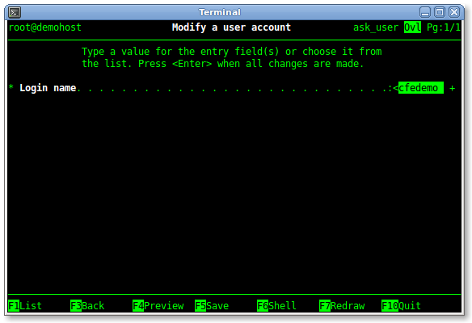

Screenshots (and screencasts)
- Example 1: Basic front-end to usermod(1) command
- Basic form
- Pop-up selector menu
- Pop-up action viewer
- Action output browser
- Example 2: User friendly front-end to usermod(1) command
(A screencast is also available)
- Pop-up window with init{} block standard error
- Form with some fields disabled or removed by init{} block
- Example 3: Menu
- Example 4: CCFE configured to be similar to AIX's SMIT
(A screencast is also available)
IBM and AIX are trademarks of International Business Machines Corporation in the
United States, other countries, or both.
Basic front-end to usermod(1) command
The file
usermods.form defines the following front-end for
the
usermod(1) Linux command:

Figure 1 - A basic form
It's a basic form definition: a field is defined for every option supported by the
usermod(1)
command, and minimal data enter support is provided: for example,
pressing the
<F1> key in the first field, the list of admitted values
appears in a pop-up menu, and its set of items is generated as specified in its
list_cmd attribute:
Figure 2 - A pop-up selector menu
Entering some values in the form (note that they are displayed in bold) and pressing the
<F4>
key, it is possible to preview the command that will be executed when the user will press the
<Enter> key:
Figure 3 - The pop-up action viewer
A successful execution of the
usermod(1) command is silent, so entering bad values and
pressing the
<Enter> key, the output browser screen will show its standard error message
(note which is displayed in bold; standard output lines are displayed with normal video attribute):

Figure 4 - The action output browser
User friendly front-end to usermod(1) command
The following sample is more complex and provide a better user friendly interface to
usermod(1) command: the
ask_user.form requests the user name to change
(for example the user "ccfedemo"):

Figure 5
(note that the
<F1> key is still active as in the
example 1, and the
left angle bracket indicates characters ahead in the field), then post
the
usermod.form with all the fields filled with the current values,
so the user can directly change them:

Figure 6
This example show you how the
init{} block of
this form can handle some exceptions: if the user enter an invalid user name
in the
ask_user.form form, then the following pop-up error window appears:

Figure 7 - Pop-up window with init{} block standard error
and the next form will not be posted until a valid user name is entered.
If CCFE is used by a non-root user (for example, from "myuname" user), the password aging and locking informations cannot be read,
so the following pop-up error window appears:

Figure 8 - Another pop-up window with init{} block standard error
and then the related fields are not presented to the user (in this case, only the field to
lock/unlock the user password):
Figure 9 - Form of figure 6 with some fields disabled or removed by init{} block
Playing with file names, you can enable the
usermod shortcut: for example, you can
- rename usermod.form to dousermod.form
- rename ask_user.form to usermod.form and change its action{} block.
Please see the manpages.
The following screenshot is produced by the file
sysmon.menu,
provided in the CCFE distribution package as sample plugin:
Figure 10 - A basic menu
CCFE configured to be similar to AIX's SMIT
In this example are reported some of the previous screenshots, but with
ccfe.conf and
msg/C/ccfe files changed to make the look of CCFE screens similar to the ones of the
AIX's
System Management Information Tool:

Figure 11

Figure 12

Figure 13
Figure 14
Figure 15

Figure 16